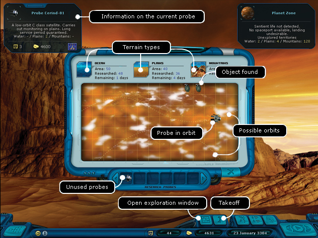
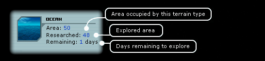

Ranger manual
> Planet Exploration Screen
|
Ranger manual
> Planet Exploration Screen
|
| Planet Exploration Screen On uninhabited planets you can come across various objects, which were once hidden by pirates or which dropped from destroyed spaceships. Having landed on an uninhabited planet, you should open the exploration map with the help of (E) key, take a probe and choose the flight trajectory from the available ones. Pay attention to the amount of days left till the end of the exploration. If you plant several probes, you will be able to explore the planet quicker. Take a close look at the probe characteristics, for instance if it can't explore the ocean, it's useless to land on the ocean surface. |

| The information about the activity of your probes will be regularly updated on the information panel in the hint "Property Outside the Ship". You can fly errands and meanwhile the probes will work. Having returned to the planet, you can gather the items discovered by probes, remove the probes from the orbit and fly to another place. Terrain description:  Each probe is designed to operate with the particular type of the territory, it determines its operation speed. The probe power is measured by the mil. square kilometers of the territory explored within a day. Classification of probes:
|